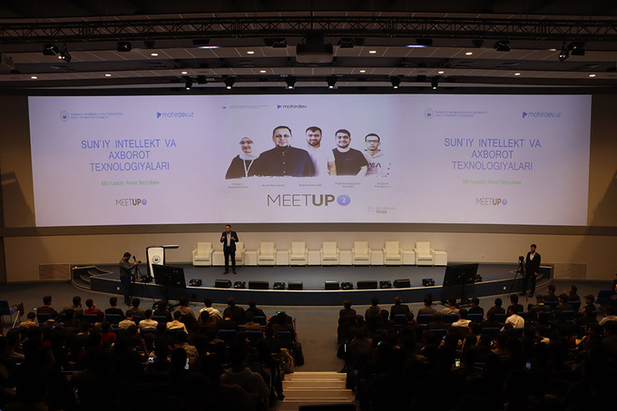

Обучение Mohirdev: как преподаватель малазийского вуза запустил образовательный стартап на узбекском языке и привлек $500 000 инвестиций
За семь месяцев онлайн-платформа IT-курсов набрала 15 тыс. студентов. Стартап проводит встречи с инженерами Google, DHL и других компаний, планирует сотрудничество со спецшколами Узбекистана и готовится к открытию онлайн-вуза.

Фото: личный архив
Анвар Нарзуллаев, который более 10 лет жывет в Малайзии и преподает в одном из университетов информвционную безопастност, основал образовательный стартап Mohirdev
Это онлайн-платформа IT-курсов по направлениям data science, искусственный интеллект, frontend разработчик. Также имеются курсы, обучающие языкам программирования — Python, Java JavaScript, C++, Go (golang), курсы для разработчиков приложений под Android и IOS и другое. Всего доступно 8 буткемпов (учебные лагеря интенсивного изучения программирования), 20 платных и бесплатных курсов.
За семь месяцев работы платформа набрала более 15 тыс. студентов и 25 преподавателей.
В прошлом году проекту удалось привлечь инвестиции узбекско-турецкого предприятия Pulse Group в размере $500 тыс. и стать их первой инвестицией в IT-образование.
На этом команда останавливаться не собирается и к 2023 году планирует открыть онлайн-вуз с аккредитацией калифорнийского университета.
Сооснователь Mohirdev рассказал Spot, как команда запускала платформу, с какими сложностями столкнулись в процессе и есть ли у проекта конкуренты.
Как пришла идея
Все начиналось в виде социального проекта. В то время во всю бушевал карантин. Я, как и многие, был переведен на удаленную работу.
Пока преподавал из дома, пришла мысль записывать лекции об информационных технологиях на узбекском языке и выкладывать их на YouTube.
Пока преподавал из дома, пришла мысль записывать лекции об информационных технологиях на узбекском языке и выкладывать их на YouTube.
Применил к делу академический подход — помимо видео-уроков загружал информацию для самостоятельного изучения, делился кодами и готовил домашние задания.
Со временем нашлись те, кому такая затея была по душе.
Это были ребята из Узбекистана — Мухаммад Халил, Мухаммаджавохир Суратов и Улугбек Самигжонов . Они уже давно занимаются программированием и параллельно ведут блоги на эту тему в социальных сетях.
Тогда-то я и задумался о создании платформы. Так, вместе мы начали подсчитывать стоимость ее разработки. Примерные цифры варьировались в диапазоне $50 тысяч . К началу декабря 2020 года мы приступили к работе.
На саму разработку ушло всего-то три дня. Но зато несколько месяцев понадобилось, чтобы найти преподавателей и создать необходимый контент.
 Фото личный архивПоэтому официальное открытие прошло лишь в июле 2021 года в формате онлайн-конференции.
Как удалось привлечь инвестиции
Перед запуском нам говорили, что для поиска инвестора проект еще сыроват. Поэтому вплоть до ноября мы активно работали на результат.
До получения инвестиций первоначальные расходы на себя взял один из соучредителей — Мухаммад Халил. По сути это были небольшие затраты, которые пошли на на дизайн, хостинг, домен и платную подписку на LMS (Learning-Management System) платформу.
Осенью мы подали заявку на участие в конкурсе стартапов от The Financial Times совместно с Seedstars.
К сожалению, мы не выиграли. Но нам удалось попасть в 30-ку числа финалистов, отобранных из 4,5 тысяч команд в категории «доступное обучение».
Именно там подсказали пересмотреть свои задачи, приоритеты и цели. Тогда мы и поняли, что можем получить развивая проект с инвестициями и без.
После участия в конкурсе к нам стали поступать запросы от различных инвесторов и венчурных фондов. Несколько раз мы презентовали проект потенциальным партнером. Но были и те, кому приходилось отказывать.
Чаще всего это были местные предприниматели, которые совершенно не понимали сути инвестиций и в большинстве своем предлагали кредиты.
В декабре команда выиграла участие в хакатоне «Open Data Challenge 2021 », организованном IT Park.
 Награждение команды на Open Data Challenge 2021. Фото: Личный архив
Награждение команды на Open Data Challenge 2021. Фото: Личный архив
Для награждения я вылетел в Ташкент и так как путь пролегал через Турцию, то вспомнил о давнем знакомом, который не раз интересовался IT-стартапами.
Презентация проекта ему понравилась и спустя время он вывел нас на нынешних партнеров — узбекско-турецкое совместное предприятие Pulse Group .
Признаться честно, все так быстро набирало обороты, что незамедлительное предложение сотрудничества с их стороны повергло в приятный шок. Изучив историю работы компании, мы согласились на партнерство.
При этом все расходы по проекту мы закладывали под сумму выигрыша в Seedstars — $500 тыс, а в последующем решили оставить все как есть. Уже в конце января получили первый транш.
О проекте, цифрах и команде
Название Mohirdev придумано не спроста.Mohir в переводе с узбекского означает талантливый, а Dev — девелопер.
Оно адаптировано под нашу главную цель — создание академии талантливых разработчиков.
Сегодня у нас восемь буткемпов, продолжительностью обучения в шесть месяцев, 20 разных полноценных и бесплатных курсов и порядка 25 преподавателей.
У проекта есть отличительная особенность — наличие сообщества «Мохир хам жамият», в рамках которого мы еженедельно организовываем онлайн-встречи с IT-специалистами из разных компаний. Среди них — инженеры из Google, Anakonda или DHL.
При этом самые популярные курсы среди всех — data science, искусственный интеллект и фронтенд-разработка.
Продвижение. Первых клиентов мы находили через программистов-блогеров, которые с нами работают. К примеру, у Саидбека Арислонова более50 тыс. подписчиков в YouTube.
Так их интернет-площадки позволяли рекламировать платформу и привлекать все больше студентов к обучению.
Теперь имея инвестиции, в этом году мы намерены вложить в продвижение $100 тыс.
Уже сегодня учатся 15 тыс . студентов. Но к концу года посредством таргета мы планируем привлечь к платным направлениям около 50 тыс. человек.
Пока сложно сказать, когда точно окупится весь проект, но показатель NPV (определяет, какой доход получит инвестор в денежном выражении вследствие своих инвестиций) уже указывает на то, что проект прибыльный.
Команда. Сейчас с нами работают молодые и амбициозные программисты.
 Фото: Личный архив
Фото: Личный архив
Конечно, с набором сотрудников не обходится без сложностей. Кадровый голод — головная боль многих сфер. Но несмотря на это нам удалось собрать профессионалов и знатоков своего дела.
Преподаватели — наше все. Поэтому сегодня активно работаем над изменениям критериев отбора. Для этого мы наняли в штат контент-менеджера.
А еще радует что теперь, получив инвестиции, мы имеем возможность не тянуть с оплатой и согласно прописанным договоренностям приобрести контент в собственность Mohirdev.
Также согласно контракту, каждый преподаватель должен помимо основного материала готовить дополнительный и работать со студентами в закрытых группах.
О рынке
Карантин поспособствовал развитию онлайн-обучения. Люди увидели перспективу образования в формате «не выходя из дома». Многие решились получить новые навыки, либо вовсе сменить профессию.
Сложности. В самом начале мы столкнулись с техническими трудностями. К примеру, в Узбекистане нет возможности продать онлайн-курс в рассрочку, используя одну из платежных систем.
Поэтому студенты вынуждены оплачивать курсы ежемесячно в полном объеме.
 Фото: Личный архив
Фото: Личный архив
Так как в начале у нас не было бюджета для гонорарных выплат, мы договаривались перечислять комиссию по итогам первых продаж. Чтобы не тянуть с этим, мы решили открыть продажи, когда контент был готов только наполовину.
Однажды случалось так, что одни из преподавателей бросили проект, не закончив работу, а некоторые и вовсе исчезли без каких-либо объяснений. С несколькими студентами нам удалось договориться, другим вернули деньги.
Конкуренция. Такого подхода как у нас на узбекистанском рынке онлайн-образования нет. Конечно, есть офлайн-центры, но несмотря на их присутствие, конкуренции не ощущается.
Ведь в сравнении с ними у нас меньше затрат, а значит и цена за обучение ниже. Так, в среднем стоимость курса составляет 250 тыс. сумов.
При этом у нас как и прежде многие полноценные курсы остаются бесплатными. В то время как в образовательных офлайн-центрах цены на них начинаются от 3 млн сумов.
Лично я веду курс по основам программирования. Он состоит из 50 лекций, а это около трех месяцев бесплатного обучения. Уже после получения базовых знаний и навыков студенты могут понять насколько им интересно направление и решиться продолжить обучаться уже на платной основе.
Планы
В скором времени мы планируем выйти на зарубежные рынки. Пока рассматриваем варианты работы в странах Центральной Азии.
Вместе с этим надо будет думать о новых языках обучения. К примеру, сейчас все лекции лишь на узбекском, но по мере расширения видео-уроки появятся на русском и казахском языках.
До июля мы рассчитываем увеличить количество буткемпов с 8 до 12, а до конца года до 20.
А еще появится программа по подготовке талантливых ребят с их дальнейшим трудоустройством.
Поэтому сейчас все наши усилия уходят на B2B переговоры. Мы расширяемся, набираем команду. О нас все чаще и больше узнают. Например, Ботир Арифджанов предложил сотрудничество в рамках работы его академии.
 Встреча с Ботиром Арифжановым. Фото: Личный архив
Встреча с Ботиром Арифжановым. Фото: Личный архив
Министерство по развитию информационных технологий и коммуникаций предложили подключить платформу к системе образования.
Но самое главное в наших планах — открытие онлайн-университета. Для этого мы уже ведем переговоры с калифорнийским вузом Woolf University.
Они могут нас аккредитовать, но для этого важно соответствовать ряду жестких требований. Например, все преподаватели должны иметь степень магистра, в составе должно быть минимум два доктора наук и более 20% обучения должно проходить в формате face to face.
#инвестиции #cтартап